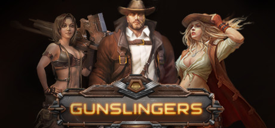

Gunslingers
Gunslingers
Details
|  | |
| Playtime | 1m 0s |
| Last Activity | 17/09/2018 12:52:24 |
| Added | 08/02/2016 |
| Modified | Never |
| Completion Status | Played |
| Source | Steam |
| Platform | PC |
| Release Date | 17/12/2015 |
| Community Score | 53 |
| Critic Score | |
| User Score | |
| Genre |
Early Access Free to Play Strategy |
| Developer |
Kovalim |
| Publisher |
Kovalim |
| Feature |
Multiplayer |
| Links |
PCGamingWiki Community Hub Discussions Guides Store Page News |
Description
CLOSING
The game will be closed at 30-DEC 2019
About the Game
Closing
The game will be closed 30-DEC-2019A unique turn-based tactical game in a Space Western setting.
Direct your mercenary in team PvP battles. Pick one of 5 classes and choose from a large assortment of armor, weapons, and equipment.
The more battles you fight, the cooler your mercenaries become, the faster they run, the better they shoot, and (most importantly) the more abilities they learn – abilities that can dramatically change the course of the battle. Use attribute points and carefully choose your equipment to match your mercenary to your unique playing style.
Play on your own and join random battles. Or, team up with your friends in a clan and take part in tournaments.
key Game Features
-
Quick turnbased gameplay. Each team's players take their turns
simultaneously, resulting in a fast-paced game with tactical
interaction between team members.
-
5 player classes. Command up to 5 mercenaries, each with their own
skills and abilities – their own strengths and weaknesses.
-
2 modes of combat. In Skirmish mode, simply kill your enemies and
protect your allies to gain victory. In Capture mode, you also
need to capture and defend control points.
- Clan tournaments. Every few days, tournaments are held to determine the strongest clan!
More Info About A Mercs
5 mercenary classes are available in the game: stormtrooper, scout, sniper, medic, and robot. Each merc has his or her own skills, weapon, and playing style.
-
John the sniper, armed with a sniper rifle, deals immense damage
to his target at a large distance. The sniper can also cover an
ally who is under threat of being attacked.
-
Lira the scout, on the other hand, uses subterfuge and cunning.
She's a scout and saboteur who can sneak up on the enemy's rear
quickly and unnoticed, revealing the enemy's position to her
allies and weakening and wounding him before nimbly hiding herself
from his retribution. Her weapon is an SMG.
-
Next is the robot Bobby, a universal battle machine with a tough
metal hull and armed with a machine gun. Bobby has two modes:
defensive mode, where he can cover allies with his powerful
shield, and attacking mode, where he turns into a weapon of mass
destruction.
-
The medic is an essential unit on the battlefield. Her name is
Leto, and she's not afraid to take aim at her allies – with a
syringe gun full of healing nanobots or a stimulator that can
refill action points. An efficient medic can make a good team
unstoppable!
- Last of all is the stormtrooper Greg. He is a tough guy armed with an assault rifle. His job is to break through the enemy's ranks, deal them damage, interfere with their activity, and all the while survive enemy attacks.
You can pick any merc to bring into battle and develop all of your mercs in parallel.